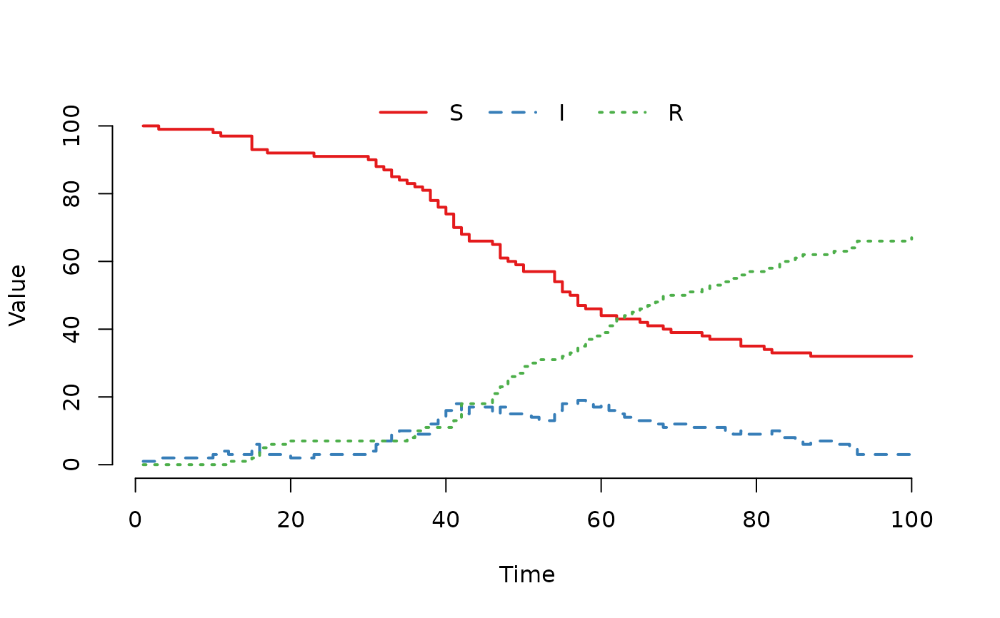

Describe your model using a simple string syntax in
R. mparse parses this description, generates model-specific
C code, and returns a SimInf_model object
ready for simulation.
Usage
mparse(
transitions = NULL,
compartments = NULL,
ldata = NULL,
gdata = NULL,
u0 = NULL,
v0 = NULL,
tspan = NULL,
events = NULL,
E = NULL,
N = NULL,
pts_fun = NULL,
use_enum = FALSE
)Arguments
- transitions
Character vector defining the state transitions. Each element follows the format
"Source -> Propensity -> Target".Syntax:
"X -> rate_expr -> Y"moves individuals from compartmentXtoYwith raterate_expr.Empty Set: Use
@for the empty set (e.g.,"I -> mu*I -> @"for death, or"@ -> lambda -> S"for birth).Variables: Define intermediate variables using
<-. Example:"N <- S + I + R". Variables can be used in propensity expressions. Order does not matter.Types: By default, variables are
double. Use(int)to force integer type (e.g.,"(int)N <- S+I+R").
Example:
c("S -> beta*S*I/N -> I", "I -> gamma*I -> R", "N <- S+I+R").- compartments
Character vector of compartment names (e.g.,
c("S", "I", "R")).- ldata
Optional local data (node-specific parameters). Can be:
A
data.framewith one row per node (columns = parameters).A numeric matrix where columns are nodes and row names are parameters.
A named vector (for single-node models).
- gdata
Optional global data (common to all nodes). Can be:
A named numeric vector (names identify parameters).
A one-row
data.frame.
Unnamed parameters in a vector must be referenced by index in the transitions.
- u0
Initial state vector. Can be a
data.frame, matrix, or named vector. SeeSimInf_modelfor details.- v0
optional data with the initial continuous state in each node.
v0can be specified as adata.framewith one row per node, as a numeric matrix where columnv0[, j]contains the initial state vector for the nodej, or as a named vector when the model only contains one node. Ifv0is specified as adata.frame, each column is one parameter. Ifv0is specified as a matrix, the row names identify the parameters. Ifv0is specified as a named vector, the names identify the parameters. The ‘v’ vector is passed as an argument to the transition rate functions and the post time step function. The continuous state can be updated in the post time step function.- tspan
A vector (length >= 1) of increasing time points where the state of each node is to be returned. Can be either an
integeror aDatevector. ADatevector is coerced to a numeric vector as days, wheretspan[1]becomes the day of the year of the first year oftspan. The dates are added as names to the numeric vector.- events
A
data.framewith the scheduled events. Default isNULLi.e. no scheduled events in the model.- E
Optional select matrix for events. Can be a
matrixordata.frame. Defines which compartments are affected by events and their sampling weights. SeeSimInf_eventsfor detailed logic ondata.framecolumns (compartment,select,value). Default isNULL(no events).- N
Optional shift matrix for events. Can be a
matrixordata.frame. Defines how individuals are moved between compartments during events. SeeSimInf_eventsfor detailed logic ondata.framecolumns (compartment,shift,value). Default isNULL(no events).- pts_fun
optional character vector with C code for the post time step function. The C code should contain only the body of the function i.e. the code between the opening and closing curly brackets.
- use_enum
Logical. If
TRUE, generates C enumeration constants for parameters found in theu,v,gdata, andldatavectors to facilitate manual C code modification or use inpts_fun. The name of each enumeration constant is the upper-case version of the corresponding parameter name (e.g.,betabecomesBETA). Additionally, the following constants are automatically generated:N_COMPARTMENTS_U: The number of discrete compartments.N_COMPARTMENTS_V: The number of continuous state variables.
These constants facilitate indexing of the
uandvvectors in C code. Note thatN_COMPARTMENTS_UandN_COMPARTMENTS_Vcannot be used as compartment or variable names. Default isFALSE(parameters accessed by integer indices).
Value
a SimInf_model object
Examples
## For reproducibility, set the seed.
set.seed(22)
## Create an SIR model with a defined population size variable.
model <- mparse(
transitions = c(
"S -> beta * S * I / N -> I",
"I -> gamma * I -> R",
"N <- S + I + R"
),
compartments = c("S", "I", "R"),
gdata = c(beta = 0.16, gamma = 0.077),
u0 = data.frame(S = 100, I = 1, R = 0),
tspan = 1:100
)
## Run and plot the result.
result <- run(model)
plot(result)
